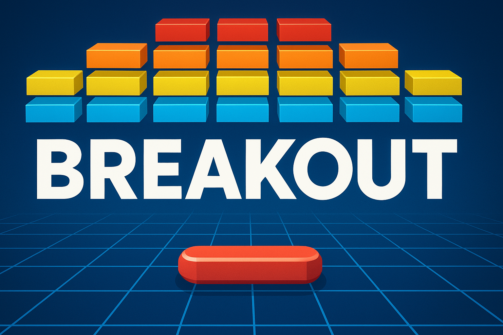
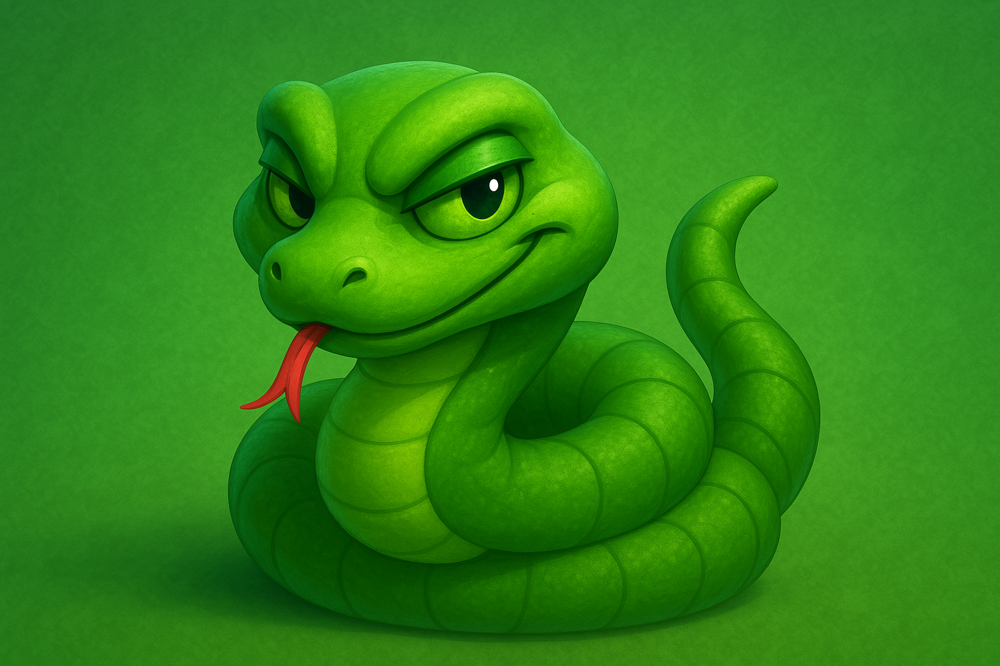
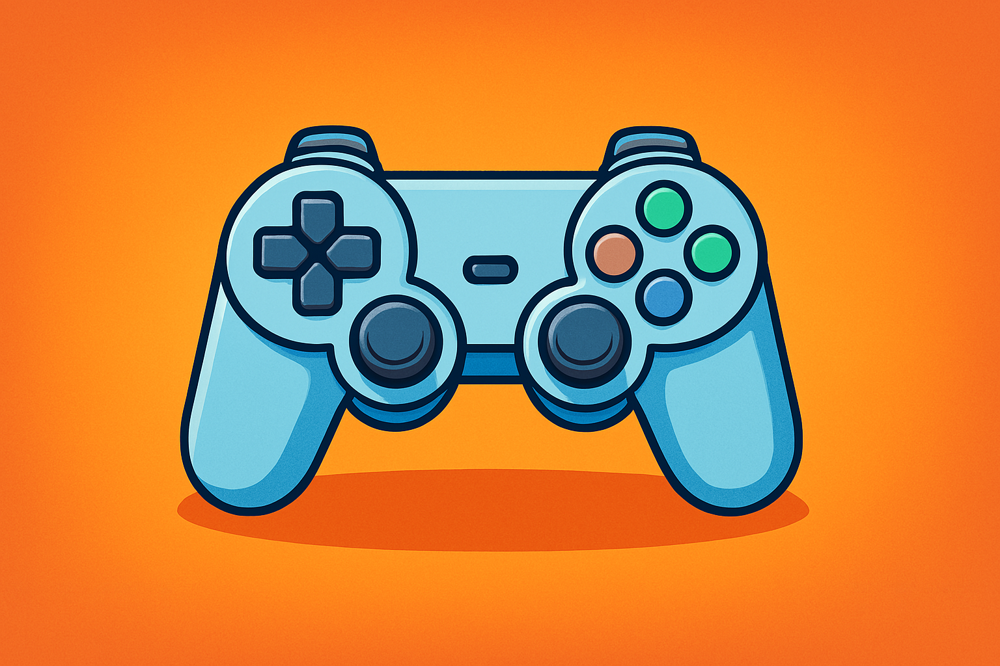
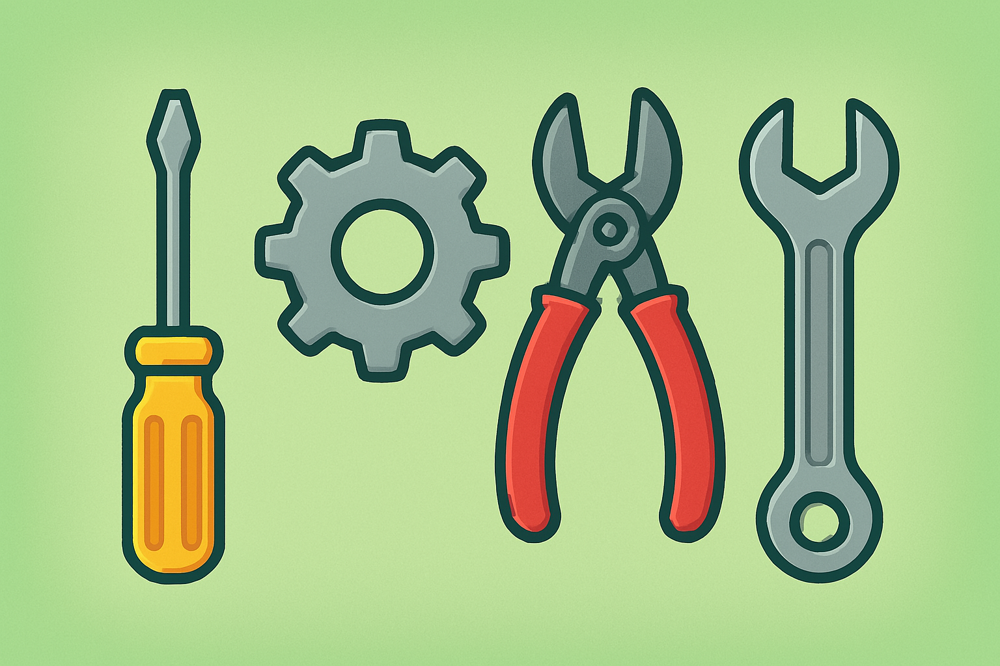
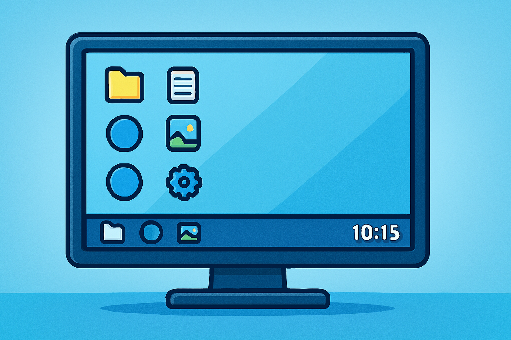
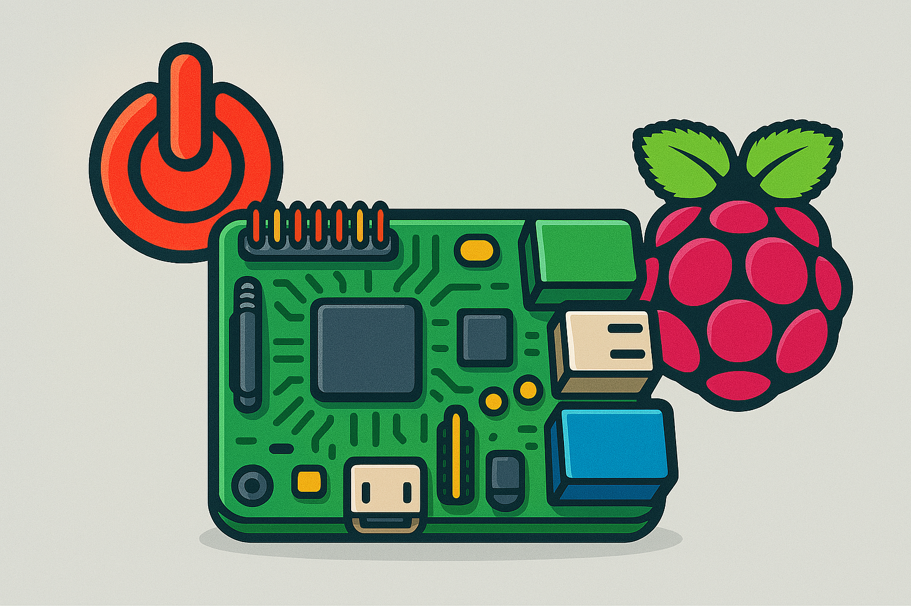

LED-Pal - Spiel mit mir

Breakout

Snake

Gamepad konfigurieren

Einstellungen
Info

ins Betriebssystem

Abschalten
IP-Adresse des LED-Pal Servers:
Idee, Konzept und Realisation:
Glaser Noah, Kovacevic Adrian und Sonnleithner Nico